上神明天祖神社/東京都品川区
品川区の上神明天祖神社は荏原七福神の弁財天を担当する神社である。
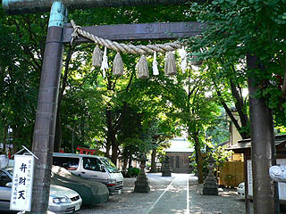 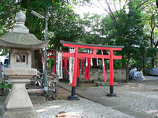
鎌倉時代にまで遡る伝承を持つこの神社は都内の住宅街にある神社としては比較的広い方だが、まあ、外から見る限りは普通の神社である。
ごく普通の街にあるごく普通の神社・・・しかし、その奥ではキテレツな方々が待ち受けていたのであった。
境内の一画に稲荷社がある。
その稲荷社の両サイドのキツネ様に目が釘付け。
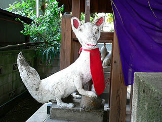 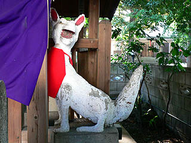
凄く険しい目付きのキツネさんである。退化した後ろ足や大きな尻尾も高ポイントだ。
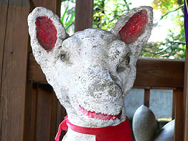
台座に作者としてマナベさんという人物の名が記されていた。奉納は昭和48年。
しかしこのキツネはマナベ世界のほんのプレリュードであった・・・
本殿の先にドーナツ型の小さな池に囲まれた弁天堂があった。厳島弁財天大神、とある。
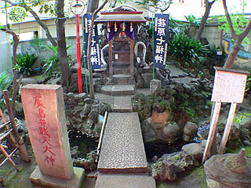
白蛇伝説を元に勧進された弁財天。かつては今の駐車場にあったというが昭和29年に現在地に移されたという。
そして昭和50年にまたしてもマナベさんがあるモノを奉納しちゃったのである。
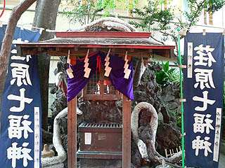
岩を積み上げた人工洞窟の前に屋根が架かっていて祠のようになっている。
その洞窟（というか祠）を守護するかのごとく巨大な白蛇が4匹のたうちまわっているのだ！
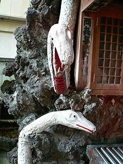 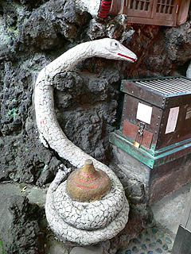 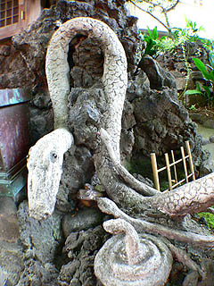
巨大白蛇はコンクリート製でペンキ塗り。
今まであちらこちらでお会いした数々のセルフメイド系コンクリ像と同じ独特のテイストが伺える。
既製の工業製品や小奇麗にまとめられたデザインに馴れ切った現代人のふやけた頭を鈍器でガツンと一発かましてくれそうな白蛇の群れである。
屋根の上から垂れ下がっている蛇などは口をカッと開けて威嚇の表情とかしてるけど、全然怖くないですもん。
それ以上に何か蛇に見えないんですけど。本物の蛇や図鑑とか見ないで記憶を頼りに作ったみたいな蛇の造形である。特に頭のあたりが。そしてキツネ様も。
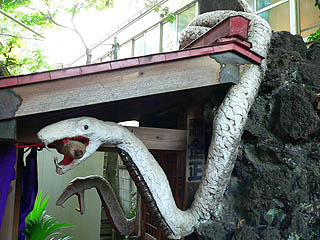
でも、良く見るとウロコを一枚一枚作ってあったりして、マナベさん的にはかなり気合の入った力作、なはず。
そして弁財天の脇にはさらに強烈なボスキャラが。
龍、なのだろう。多分。
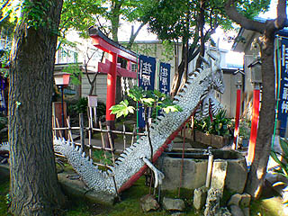 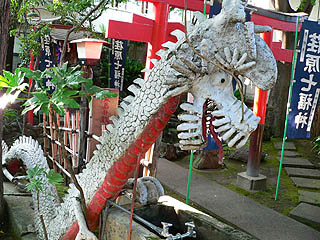
これもまたマナベさんの脳内フィルターを通した記憶の産物をそのまま物質化したようなかなり独自の路線を独走する造形である。
私の珍寺ツボを刺激しまくりの素晴らしいファンキードラゴン。
コレに勝てるのはウルトラマンに出て来た宇宙竜ナースくらいなもんでしょ。
それにしても頭のコブは一体何なんだろう？何か別の生き物とごっちゃになっちゃってるのでは？マナベフィルター。
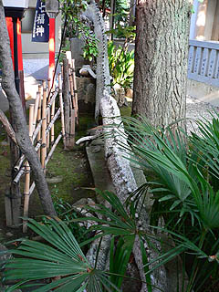
執拗なまでに続くセビレ。きっとマナベさんは凄く自分（の記憶）に正直な人なのだろう。
龍の逆サイドの塀には蛇が木に絡み付いているレリーフがあった。
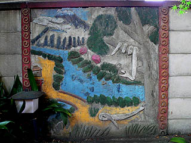
立体よりレリーフの方がチョット苦手なようです・・・
情報提供はまんじまるさんです
2005.8.
珍寺大道場 HOME